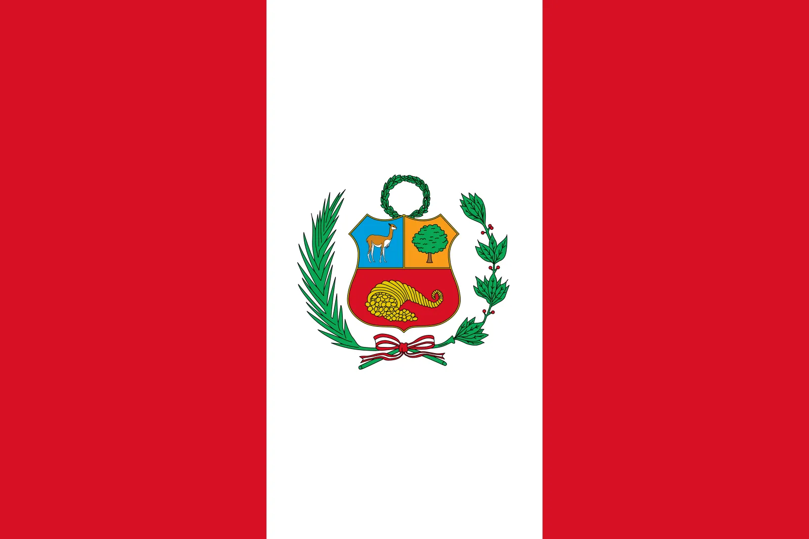
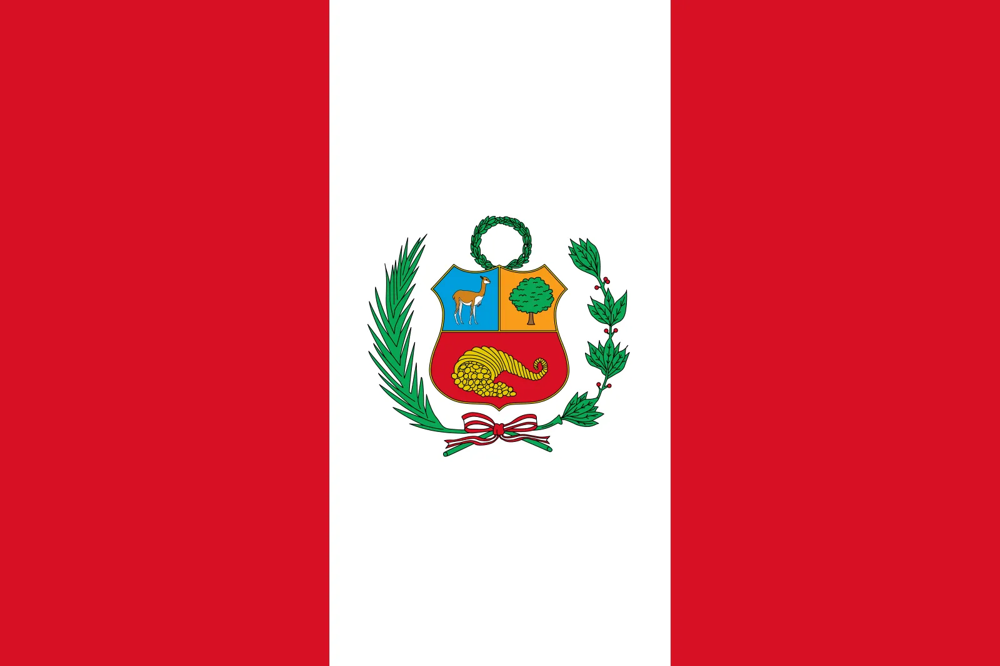
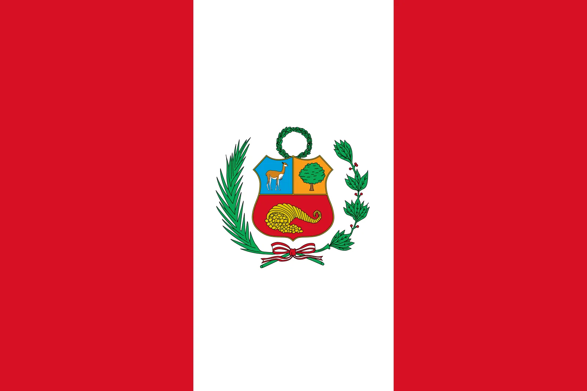
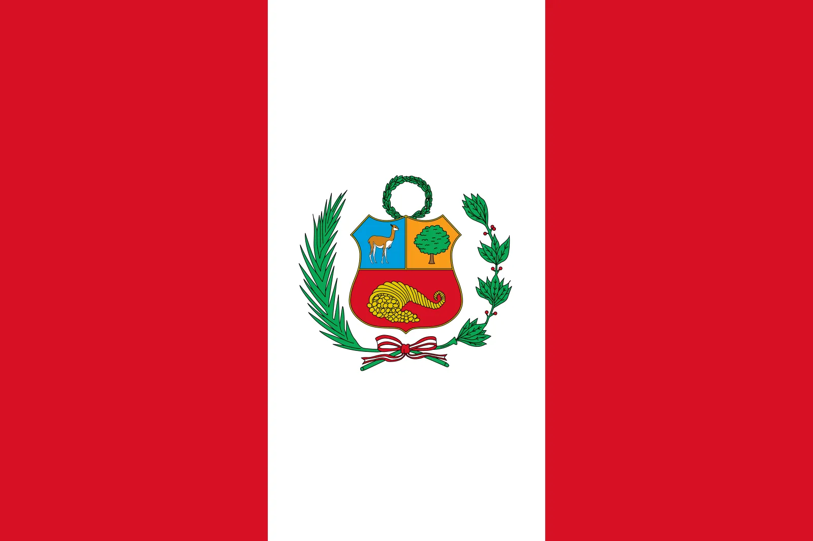

At Nicholas Latin Fusion, we blend the vibrant flavors of Colombian and Peruvian cuisine to create a unique dining experience. Drawing inspiration from our roots in two small cities, Jaén, Peru, and Cali, Colombia, we celebrate the rich culinary traditions of both cultures in every dish we serve.

Cali, Colombia, known as the "Salsa Capital of the World," is where salsa music and dance are central to daily life and cultural identity. This lively heritage is reflected in Cali’s unique cuisine, influenced by Afro-Colombian, indigenous, and Spanish traditions. Signature dishes like sancocho de gallina, a rich chicken stew with plantains, yuca, and corn, and pandebono, a beloved cheese bread, showcase the region’s agricultural bounty. Together, Cali’s culinary and musical traditions tell the story of a city pulsing with flavor and rhythm, enriching Colombia's cultural landscape.

Jaén, Peru, is a vibrant town in the northern Amazon, known for its tropical climate and rich cultural heritage. Famous for producing some of the finest coffee and cacao beans, Jaén also honors its indigenous traditions through local festivals. The cuisine reflects a blend of highland and Amazonian flavors, featuring dishes like juane, a flavorful rice and chicken dish wrapped in jungle leaves, and tacacho con cuyi, mashed plantains served with roasted guinea pig. These specialties highlight Jaén’s unique place in Peru’s cultural mosaic.